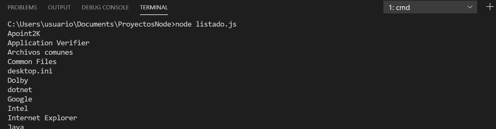

2.1 Módulos en Node.js¶
Introducción¶
Node.js es un framework altamente modularizado. Esto significa que está compuesto por numerosos módulos, librerías o paquetes (usaremos estos términos de manera intercambiable). Esta estructura permite que solo agreguemos a nuestros proyectos los módulos que realmente necesitamos.
El núcleo de Node.js incorpora algunas librerías de uso habitual. Por ejemplo:
httpyhttps, para hacer que nuestra aplicación se comporte como un servidor web, o como un servidor web seguro o cifrado, respectivamente.fspara acceder al sistema de archivosutils, con algunas funciones de utilidad, tales como formato de cadenas de texto.
Para ver la lista detallada de módulos podemos consultar https://nodejs.org/api/, donde aparecen todos los módulos incorporados en el núcleo de Node.js.
Módulos del núcleo de Node.js¶
Para utilizar cualquier módulo (propio de Node.js o hecho por terceras partes) en una aplicación es necesario incluirlo en nuestro código con la instrucción require. Recibe como parámetro el nombre del módulo a añadir, como una cadena de texto.
Por ejemplo, vamos a crear un archivo llamado listado.js. En él vamos a hacer un pequeño programa que utilice el módulo fs incorporado en el núcleo de Node.js para obtener un listado de todos los archivos y subcarpetas de una carpeta determinada:
| listado.js | |
|---|---|
Si ejecutamos este programa en el terminal (recordemos que podemos usar el terminal integrado de Visual Studio Code), obtendremos el listado de la carpeta indicada:

Utilizar módulos propios¶
Cuando estamos haciendo un proyecto mediano o grande es conveniente descomponer nuestra aplicación en diferentes módulos.
Para hacer esto podemos crear un archivo para cada módulo, y en cada uno de ellos definir las funciones y variables que necesitemos. Para poder utilizar estas funciones y variables en otros módulos, es necesario exportarlas. Para ello, Node.js nos proporciona un objeto llamado module.exports.
Por ejemplo, dentro de una misma carpeta creamos dos ficheros: utilidades.js y principal.js dentro de la misma carpeta. El fichero utilidades contendrá:
| utilidades.js | |
|---|---|
Y el fichero principal:
| principal.js | |
|---|---|
Si ejecutamos el fichero principal, obtendremos la suma y la resta de los dos números:
El objeto module.exports admite tanto funciones como atributos o propiedades. Por ejemplo, podríamos definir una propiedad para almacenar el valor del número "pi":
El ejemplo anterior funcionará siempre que ejecutemos la aplicación NodeJS desde su misma carpeta.
Pero si estamos en otra carpeta y ejecutamos la aplicación desde allí, no funcionará:
Entonces require hará referencia a la carpeta desde donde estamos ejecutando, y no encontrará el archivo utilidades.js, en este caso. Para evitar este problema, podemos emplear la propiedad __dirname, que hace referencia a la carpeta del módulo que se está ejecutando (principal.js, en este caso):
| principal.js | |
|---|---|
Módulos de terceros. NPM¶
npm (Node Package Manager) es un gestor de paquetes para Javascript, y se instala conjuntamente con Node.js. Podemos comprobar si lo tenemos instalado y cuál es su versión con el siguiente comando:
Aunque también nos servirá el comando npm --version.
Inicialmente, npm se pensó como un gestor para poder instalar módulos en las aplicaciones Node.js, pero se ha convertido en mucho más que eso, y a través de él podemos también descargar e instalar en nuestras aplicaciones otros módulos o librerías que no tienen que ver con Node.js, como por ejemplo jQuery.
El registro de librerías o módulos gestionado por NPM está en la web https://www.npmjs.com/. En esta web podemos buscar módulos, ver su documentación y ver ejemplos de uso.
Instalar módulos locales a un proyecto¶
La configuración básica de los proyectos Node.js se almacena en un archivo JSON llamado "package.json". Este archivo se puede crear directamente desde línea de comandos:
Se iniciará un asistente en el terminal para que demos valor a cada atributo de la configuración. Lo más típico es rellenar el nombre del proyecto, la versión, el autor y poco más. Muchas opciones tienen valores por defecto puestos entre paréntesis, por lo que si pulsamos Intro se asignará dicho valor sin más.
Para instalar un módulo externo en un proyecto determinado, debemos abrir un terminal y situarnos en la carpeta del proyecto. Después, escribimos el siguiente comando:
Vamos a probar con un módulo sencillo y muy utilizado (tiene millones de descargas semanalmente), ya que contiene una serie de utilidades para facilitarnos el desarrollo de nuestros proyectos. Se trata del módulo "lodash", que podéis consultar en la web citada anteriormente https://www.npmjs.com/package/lodash. Para instalarlo en nuestro proyecto, ejecutamos el siguiente comando:
Tras ejecutar el comando anterior, se habrá añadido el nuevo módulo en una subcarpeta "node_modules/" dentro de nuestro proyecto.
Además se modifica el archivo "package.json" de configuración con el nuevo módulo incluido en el bloque de dependencias:
Para poder utilizar el nuevo módulo, procederemos de la misma forma que para utilizar módulos predefinidos de Node: emplearemos la instrucción require con el nombre original del módulo, por ejemplo:
Si ejecutamos este ejemplo desde el terminal, obtendremos lo siguiente:
Si decidimos subir nuestro proyecto a algún repositorio en Internet como Github o similares, o dejar que alguien se lo descargue para modificarlo después o simplemente para copiar el proyecto en otra carpeta, no es buena idea subir la carpeta "node_modules/", ya que puede llegar a ser muy grande. Por lo tanto, lo recomendable es no compartir la carpeta "node_modules/", y no es ningún problema hacer eso, ya que gracias al archivo "package.json" siempre podemos ejecutar el comando:
Este comando leerá el archivo "package.json" y descargará todos los módulos que se encuentren en él, creando la carpeta "node_modules/" y descargando en ella todos los módulos necesarios.
Para desinstalar un módulo (y eliminarlo del archivo "package.json", si existe), escribimos el comando siguiente:
Instalar módulos globales al sistema¶
Para cierto tipo de módulos, aquellos que se ejecutan desde terminal como Nodemon un watcher de Node.js, eslint para comprobación de código Javascript, Gulp para automatización de tareas, TypeScript para trabajar con este lenguaje, JSHint para comprobación de sintaxis Javascript, etc., es conveniente instalarlos de forma global en el sistema para poder usarlos en cualquier proyecto.
La forma de hacer esto es similar a la instalación de un módulo en un proyecto concreto, añadiendo algún parámetro adicional, y con la diferencia de que, en este caso, no es necesario un archivo "package.json" para gestionar los módulos y dependencias, ya que no son módulos de un proyecto, sino del sistema. La sintaxis general del comando es:
donde la opción -g hace referencia a que se quiere hacer una instalación global.
Es importante tener presente que cualquier módulo instalado de forma global en el sistema no podrá importarse con require en una aplicación concreta (para hacerlo tendríamos que instalarlo también de forma local a dicha aplicación).
Por ejemplo, podemos instalar el módulo nodemon, que es muy útil para el desarrollo, ya que reinicia automáticamente nuestra aplicación cuando detecta cambios en los archivos del proyecto. Para instalarlo globalmente, ejecutamos:
Una vez instalado, podemos usarlo en cualquier proyecto ejecutando:
Otro ejemplo es el módulo typescript, que permite trabajar con TypeScript en lugar de JavaScript. Para instalarlo globalmente, ejecutamos:
Después, podemos compilar archivos TypeScript a JavaScript usando el comando: